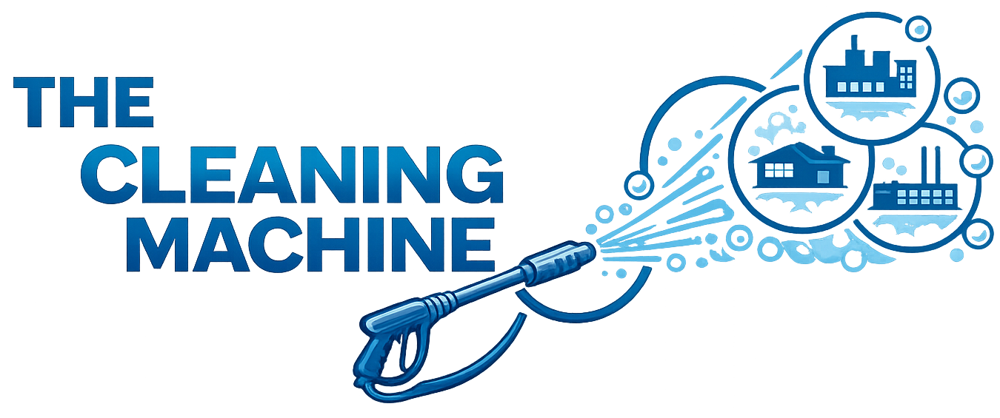
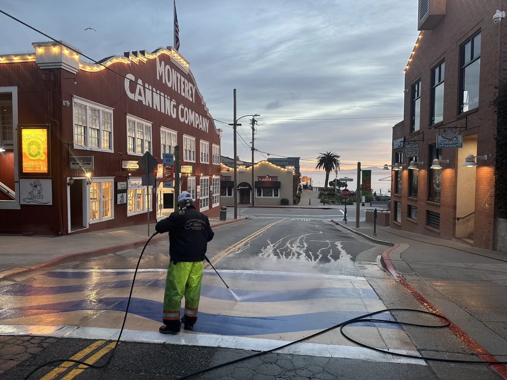
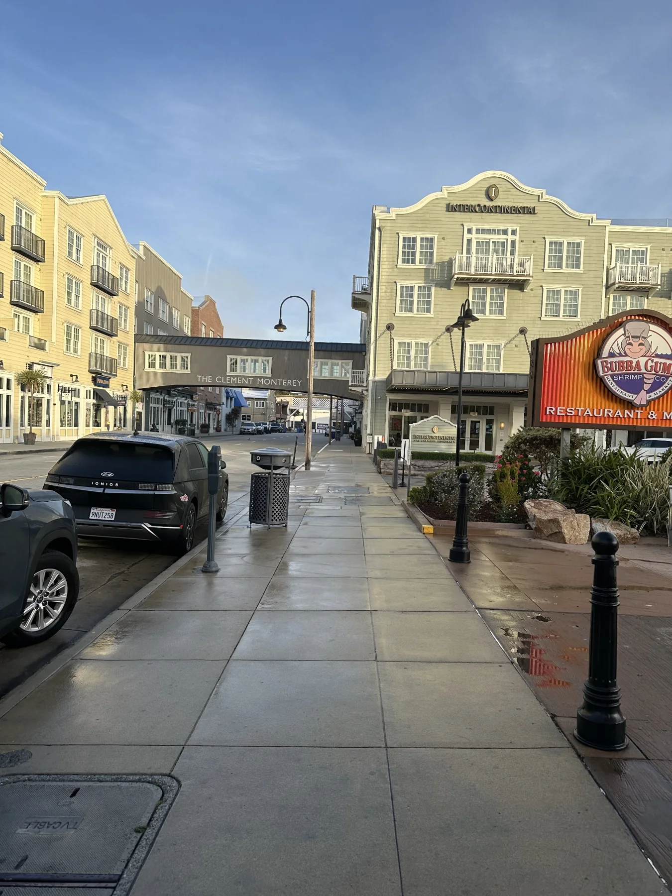

Window cleaning
Clearer views and a fresh finish, with a de-ionized water system available for window cleaning.

MONTEREYPRESSURE WASHMONTEREY PRESSURE WASH
From your windows to your walkways, bring out the best in your property with an experienced local owner.

LOCAL EXPERIENCE. VISIBLE RESULTS.WHAT WE CLEAN
A cleaner property starts with the right approach. Steve evaluates the job in person and recommends the cleaning method for your surfaces.
Clearer views and a fresh finish, with a de-ionized water system available for window cleaning.
Clear leaves and debris so your gutters can do their job.
Remove accumulated dirt from your panels with a cleaning approach suited to your installation.
Address roof buildup with a method selected for your roofing material and condition.
Refresh exterior surfaces, patios and walkways with a thorough clean.
Keep storefronts, sidewalks, parking areas and other business spaces looking their best.
Hot and cold water cleaning, plus a de-ionized water system. We match the approach to the job during your free estimate.
OUT IN THE FIELD
Real jobs. Real Monterey properties.
A look at the team in action.

MEET YOUR LOCAL OWNER
Steve Williams has owned Monterey Pressure Wash for over 30 years. That experience goes into every property assessment and every cleaning job.
Whether it’s your home or your business, start with a conversation and a free visit to your property.
Talk with SteveLET’S GET STARTED
Request a free on-site estimate. We’ll contact you to confirm a time, visit your property and estimate the job in person.
Share a few details about your property.
Your preferred date is a request, subject to availability.
Steve assesses the work and explains your options.